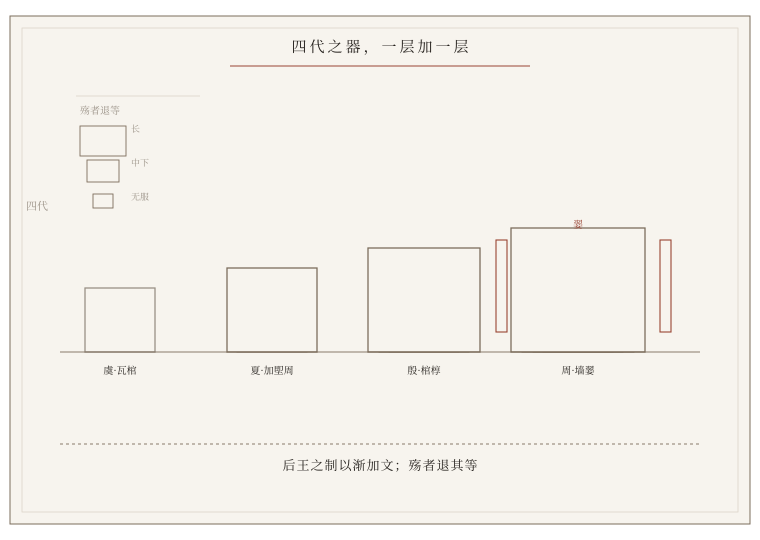

檀弓上 · 三·十一 · 第 214 课
有虞氏瓦棺，夏后氏堲周，殷人棺椁，周人墙置翣；又以殷之棺椁葬长殇，以夏后氏之堲周葬中殇、下殇，以有虞氏之瓦棺葬无服之殇。注「始不用薪也」「凡此言后王之制文」「略未成人」。
说什么事：四代棺饰一层加一层，同一样东西随年岁减等而用。
落在哪一层：礼，兼及礼制沿革与礼意。论「后王之制，以渐加文」。
为何编在此位：上节收曲礼之末，此节起檀弓丧制之辨。棺椁之始，正是一部礼器的生长史。
【经】有虞氏瓦棺，夏后氏堲周，殷人棺椁，周人牆置翣。周人以殷人之棺椁葬長殤，以夏后氏之堲周葬中殤、下殤，以有虞氏之瓦棺葬無服之殤。
【注】有虞氏瓦棺，始不用薪也；有虞氏上陶。夏后氏堲周，火熟曰堲，燒土冶以周於棺也，或謂之土周，由是也。《弟子職》曰「右手折堲」。殷人棺椁，椁，大也，以木為之，言椁大於棺也；殷人上梓。周人牆置翣，牆，柳衣也；凡此言後王之制文。略未成人。
【疏】此一节论棺椁所起及用棺椁之事。注「始不至上陶」：案《易·下系辞》云「古之葬者，厚衣之以薪，葬之中野，不封不树，丧期无数；后世圣人易之以棺椁，盖取诸《大过》」；《大过》巽下兑上，初六在巽体，巽为木，上六位在巳，巳当巽位，巽又为木，二木在外以夹四阳，四阳互体为二乾，乾为君为父，二木夹君父，是棺椁之象；今虞氏既造瓦棺，故云「始不用薪」；然虞氏瓦棺则未有椁也，《系辞》何以云「后世圣人易之以棺椁」，连言椁者，以后世圣人其文开广，远探殷、周。「有虞氏上陶」者，案《考工记》陶人造瓦器，故引之证瓦棺。注「火熟至折堲」：「火熟」者以《弟子职》云「折烛之炎烬名之曰堲」，故知堲是火熟者；「烧土冶以周于棺也」谓凿土为陶冶之形，大小得容棺；「或谓之土周」者，《曾子问》云「下殇土周葬于园」。注「椁大至上梓」：椁声与宽廓相近，故云「大于棺」；「殷人上梓」亦《考工记》文。注「墙柳至制文」：案《丧大记注》「在旁曰帷，在上曰荒」，帷荒所以衣柳，则以帷荒之内木材为柳，其实帷荒及木材等总名曰柳，故《缝人》云「衣翣柳之材」，注「柳之言聚，诸饰之所聚」；「凡此言后王之制文」者，凡谓虞夏殷周：有虞氏唯有瓦棺，夏后氏瓦棺之外加堲周，殷则梓棺替瓦棺又有木为椁替堲周，周人棺椁又更于椁傍置柳、置翣扇，是后王之制以渐加文也。夏言「后」者，《白虎通》云「以揖让受于君，故称后」，殷周称人者，以行仁义、人所归往，故称人。
瓦棺 烧土为棺。注「始不用薪也」。
堲周 注「火熟曰堲，烧土冶以周于棺」。烧土为砖，四周砌于瓦棺之外。
椁 注「椁，大也」。外棺，大于棺。
墙 注「墙，柳衣也」。棺外之帷荒，总名柳。
翣 棺旁之扇，以障蔽。
殇 未成人而死。十六至十九为长殇，十二至十五为中殇，八至十一为下殇，七岁以下为无服之殇。
有虞氏用瓦棺；夏后氏加堲周；殷人用棺与椁；周人于椁外置柳与翣。周人以殷人的棺椁葬长殇，以夏后氏的堲周葬中殇、下殇，以有虞氏的瓦棺葬无服之殇。
此节两层。第一层是四代的加法：瓦棺→加堲周→改棺椁→再置墙翣，一层比一层讲究。郑注一句「后王之制，以渐加文」把这条线说明。第二层立刻反过来：殇者依次降等——长殇用最厚之棺椁，中下殇用堲周，无服之殇退回最早的瓦棺。四代所积之文，一朝按年岁退回原本。这就是礼的两面：对成人加，对未成人减。
第一层 以渐加文 四代之器，不是互相替代，是层层叠加：虞有瓦棺，夏加堲周，殷以梓棺替瓦棺、以木椁替堲周，周又于椁旁置柳置翣。疏说得极清楚：「是后王之制以渐加文也」。文明在器物上的样子，就是一层一层地厚。
第二层 以薪到以棺 疏引《系辞》「厚衣之以薪，葬之中野，不封不树」，又引《大过》卦象：二木夹四阳，为棺椁之象。古人解释器的来历，不用进步之说，而用卦象之说——器之变，被视为天地之象的落实。此层可看古人如何为「变」找根据。
第三层 殇者退等 长殇用棺椁，中下殇用堲周，无服之殇用瓦棺。注「略未成人」。四代之器在此不是并列可选，而是一条等第：年愈少，器愈简。同是死，礼所予之厚薄随年而变。此义最见古人对「未成」的判断：未成人者，其礼未成，故其器亦退。
第四层 名与实 夏称「后」，殷周称「人」，注引《白虎通》解其故。一个称谓，就是一部政治史。礼之名，从来不虚设。
与今日何干 凡制度，多是层层加厚而成；加厚之后，最易忘其本来。此节给两个提醒：一是加厚有其序，不可一步到位；二是加厚之后仍须有一条「退等」的路，让不该用厚者不必用厚。
| 左 | 右 |
|---|---|
| 有虞氏瓦棺 | 始不用薪，上陶 |
| 夏后氏堲周 | 烧土周于棺，瓦棺外加一层 |
| 殷人棺椁 | 梓棺替瓦棺，木椁替堲周 |
| 周人墙置翣 | 椁旁置柳、置翣 |
| 后王之制以渐加文 | 层累而厚，非一时并出 |
| 长殇用棺椁 | 年长者器厚 |
| 中下殇用堲周 | 年减则器减 |
| 无服之殇用瓦棺 | 略未成人 |
画四具并置的葬器，自左至右列于同一地面，间距相等，各配一小块土色底座。第一具：一只素瓦瓮形的外廓，表面无纹。第二具：同样的瓦廓外加一层薄薄的砖砌围框（砖块可见，四角相接）。第三具：一只木棺，外加一层更大的木椁，两重木纹深浅不同。第四具：木棺木椁之外再加一圈帷幔状的围障，围障两侧各立一柄长扇形翣。四具高低相近，只以层数递增。另在第四具右前方地上放一具极小的瓦棺（尺寸约为前者三分之一），示殇者退等。不写文字、不画人。赭色只用在第四具左右两柄翣的柄上。
